La stimulation transcrânienne magnétique
TMS — MST
Psychiatre et chercheur · CHUM
Qu’est-ce que la neuromodulation?
- Approche thérapeutique qui consiste à réguler l'activité neuronale dans le cerveau pour traiter des troubles psychiatriques.
- Implique l'utilisation de champs magnétiques ou électriques:
- soit externes: stimulation magnétique transcrânienne (rTMS) ou encore la stimulation transcrânienne à courant direct (tDCS),
- soit internes via des électrodes implantées, comme dans la stimulation cérébrale profonde (DBS) ou la neurostimulation du nerf vague (VNS).
- Ces techniques peuvent être appliquées directement sur le cuir chevelu ou sur des nerfs périphériques et ciblent la stimulation ou l'inhibition de circuits cérébraux spécifiques associés aux symptômes des patients.
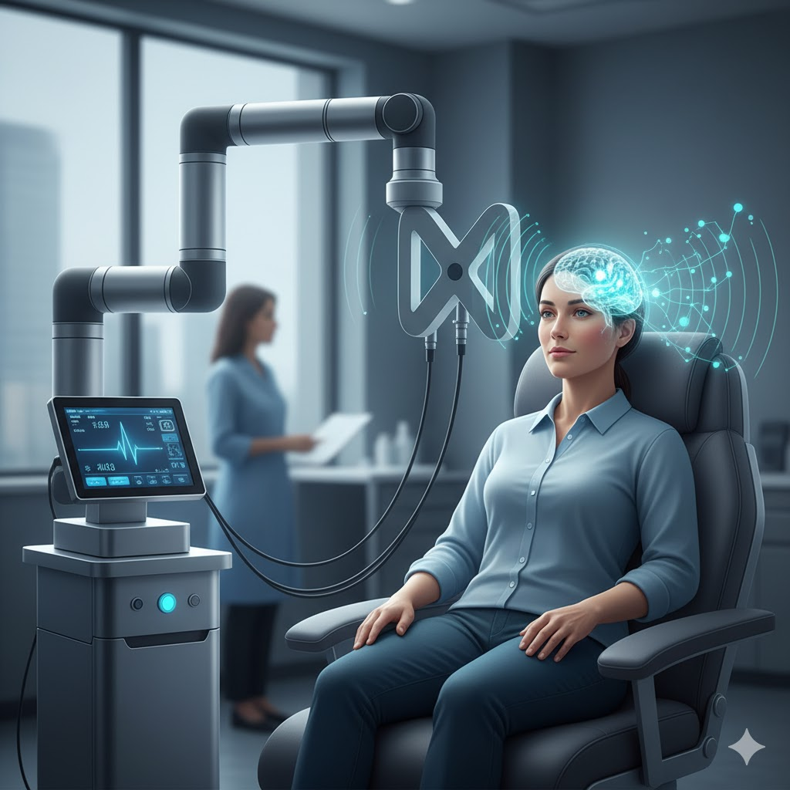
Nano Banana, Gemini 2025
Historique
1831: découverte du principe d’induction électromagnétique par Faraday
1896: Jacques Arsène D’arsonval fait de nombreuses découvertes en «électricité médicale» dont la diathermie. Place la tête d’un sujet (!) dans un puissant électroaimant….
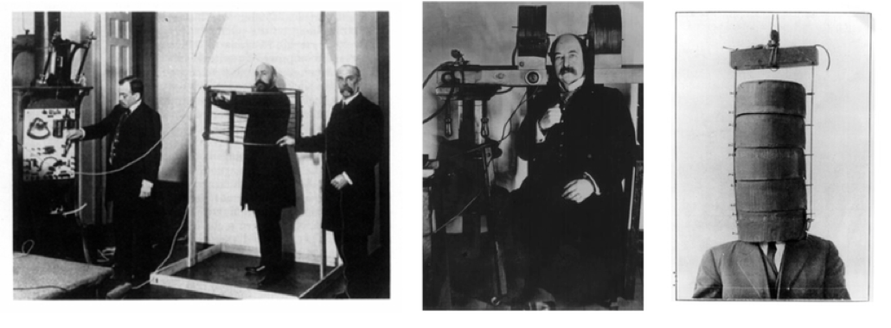
Historique
Années ’80: Anthony Barker à l’Université de Sheffield en Angleterre crée le premier appareil moderne de TMS pour usage neuro-diagnostic (voie corticospinale). Provoque une dépolarisation du cortex moteur
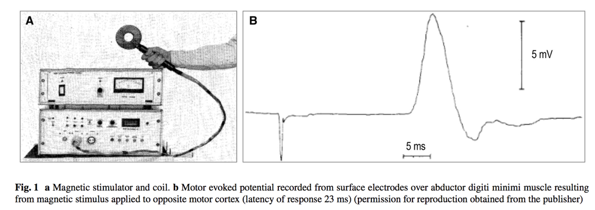
TMS
Années ’90: premières études pour la dépression
1996: Première étude par le groupe de le groupe de Pascual-Leone de Harvard (HF 10 Hz sur le DLPFC gauche) chez patients avec dépression pharmaco-résistante
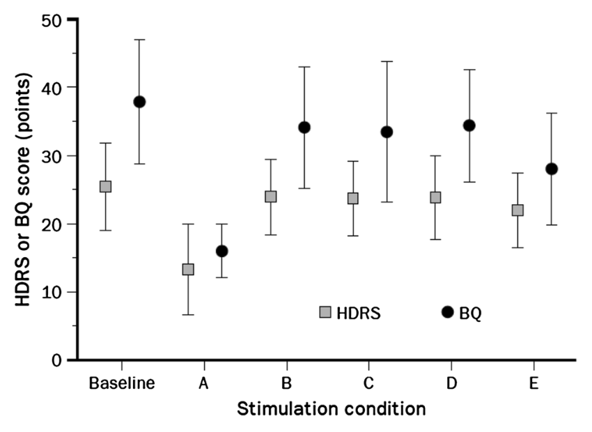
Un cerveau coincé
- Le narratif « déséquilibre chimique » est simpliste
- Ce qui est claire = étiologie de la dépression est complexe
- Génétique, stress, traumatique, perte, deuil, personnalité, etc.
- MDD = états cérébraux inflexibles, avec biais négatif persistant.
- Coincé à plusieurs niveaux
- Cellulaire
- Réseau neuronal
- Comportemental
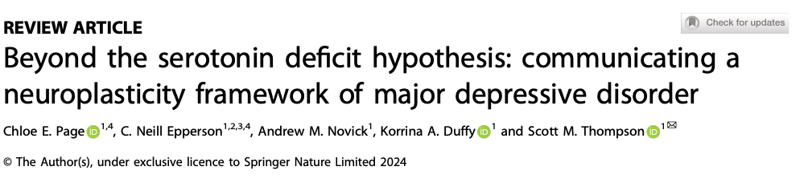
Page et al. 2024
Cerveau coincé
- Même scène, cerveau inflexible
- 1: Allo, je suis pris là, on se parle plus tard?
- D: « J’ai fait quelque chose de pas correct. »
- Verrouillage attentionnel
- D: « Ils n’ont plus de respect pour moi. »
- « Il n’y a qu’une explication. »
- On ne retient que les signes de rejet; on ignore le courriel amical reçu d’eux hier.
- D: ÉVITEMENT
- L’évitement empêche toute dés-confirmation; « l’erreur de prédiction sociale » ne se met jamais à jour — la rigidité se renforce.
- Évite le collègue toute l’après-midi; message sec; productivité en baisse.
- D: Boucle d’apprentissage
- Cerveau Flexible
- Allo, je suis pris là, on se parle plus tard? On étiquette l’indice comme ambigu…. Bof :
- « Probablement débordé. » --> « Dispo après 15 h? »
Un cerveau coincé
Page et al. 2024
- Coincé à plusieurs niveaux
- Cellulaire: 5HT, synapse dysfonctionnelle
- Réseau neuronal: cortex prefrontal (PFC), hippocampe, nucleus accumbens, amygdale
- Comportemental : bais négative, émotion et cognition rigide
Un cerveau coincé
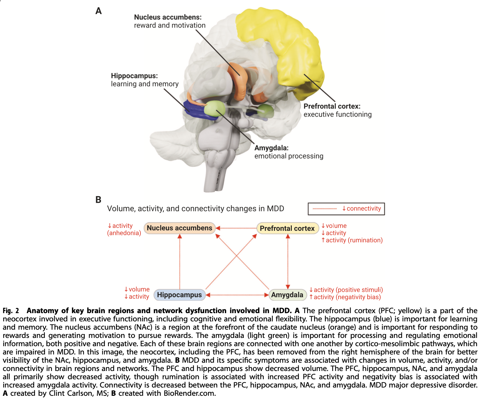
Page et al. 2024
Le cadre conceptuel : plasticité et réseaux
Qu’est-ce que un AD ?
- Augmentation de la neurotransmission monoaminergique (5-HT/NA ± DA)
- ISRS/IRSN/tricycliques: inhibition de recapture et activation récepteur
- Mirtazapine: antagonisme 5-HT2/5-HT3 et α2 (libération NA/5-HT)
- Vortioxétine: multimodal (inihibition SERT + modulations récepteurs 5-HT)
- Délai de réponse
- Fonctionne mais reduction de symptômes maximal en 4-6 semaines
Critique et balance
- Moncrieff et al. 2022: Revue Umbrella
- Argument qu’il n’existe pas de preuve du role de 5HT dans la dépression…
- L’article est beaucoup critiqué (cf : https://www.psychiatrymargins.com/p/serotonin-strikes-back)
- La sérotonine est impliquée, mais la dépression n’est pas « un déficit de sérotonine »; multiplicité de voies (réseaux CEN/DMN/SN, plasticité synaptique, inflammation, stress) et phénotypes cliniques
Comment assouplir un cerveau?
- Mécanisme d’action des tx de la dépression
- PLASTICITÉ
- AD classique
- Réduction du bias négative ➡ changement comportemental/émotionnel/cognitif
- Niveau cellulaire
- Les AD classiques restaurent la structure et la fonction synaptiques (↑ nombre de synapses, propriétés électrophysiologiques normalisées), surtout en hippocampe. • Sous ISRS chez des sujets sans dépression: ↑ densité synaptique en PFC et hippocampe après ~5 semaines. • En TDM: ↑ synthèse de BDNF et ↑ activation de son récepteur TrkB → favorise la formation et le maintien des synapses. • Si la signalisation BDNF–TrkB est altérée, les bénéfices des AD disparaissent (modèles animaux).
Comment assouplir un cerveau?
- .
- Niveau comportemental
- La restauration synaptique et la meilleure connectivité réseau se traduisent par une amélioration de la motivation, du traitement de la récompense et des fonctions exécutives.
- Le lien causal est soutenu par l’animal: sans BDNF–TrkB, l’amélioration comportementale sous AD n’apparaît pas.
- BDNF = super important!
Comment agissent les AD classiques
- Effets précoces (jours, parfois 1 dose):
- Atténuation du biais négatif et reconfiguration rapide des circuits émotionnels (amygdale, pgACC), avant tout changement d’humeur clinique. Ces modifications précoces prédisent souvent la réponse ultérieure
- Effets chroniques (semaines)
- Restauration progressive des réseaux récompense/exécutif (↑ activité NAc; ↑ connectivité NAc-PFC) et réparation synaptique avec hausse de la signalisation neurotrophique (BDNF-TrkB).
- Les monoamines ne « corrigent » pas un simple déficit; elles amorcent des cascades de plasticité et modulent rapidement le traitement émotionnel, ouvrant une fenêtre où de nouveaux apprentissages peuvent s’inscrire.
Pourquoi cela ne suffit pas seul: le rôle du contexte, des interactions et de la psychothérapie?
- La « nouvelle » flexibilité doit être mise en acte par l’environnement social: le biais plus positif doit se traduire en expériences et associations nouvelles. C’est l’une des raisons du délai d’action clinique.
- La psychothérapie et un contexte favorable potentialisent les effets des AD; l’analogie « physiothérapie après fracture » illustre cette synergie traitements-experience
- Les interactions sociales modulent la trajectoire: insuffisantes ou négatives, elles limitent la traduction du changement cognitif initial
Hypothèses sur les mécanismes d’action généraux - PLASTICITÉ
Plasticité cellulaire rTMS
- Neurotrophines rTMS ↑ BDNF sérique et ↓ IL-1β/TNF-α chez des patients âgés avec dépression résistante → signal neurotrophique et anti-inflammatoire. (Zhao et al., 2019).
- Voie BDNF–TrkB (preuve translationnelle) rTMS potentialise l’activation de TrkB par le BDNF dans des lymphocytes humains; chez le rat, rTMS 5 Hz sur 5 jours renforce le couplage BDNF–TrkB. (Wang et al., 2011).
Plasticité cellulaire rTMS
Synaptogenèse / neurogenèse (préclinique) rTMS ↑ BDNF, synaptophysine (SYP) et NR2B dans l’hippocampe; stimule la neurogenèse et réduit l’apoptose. (Shang et al., 2016; Ueyama et al., 2011; Guo et al., 2017).
Neurochimie in vivo (MRS) Après rTMS, GABA préfrontal ↑ chez MDD; des revues MRS rapportent des hausses frontales de GABA/Glx/NAA post-rTMS. (Dubin et al., 2016; Gonsalves et al., 2022)
Triple Network Model
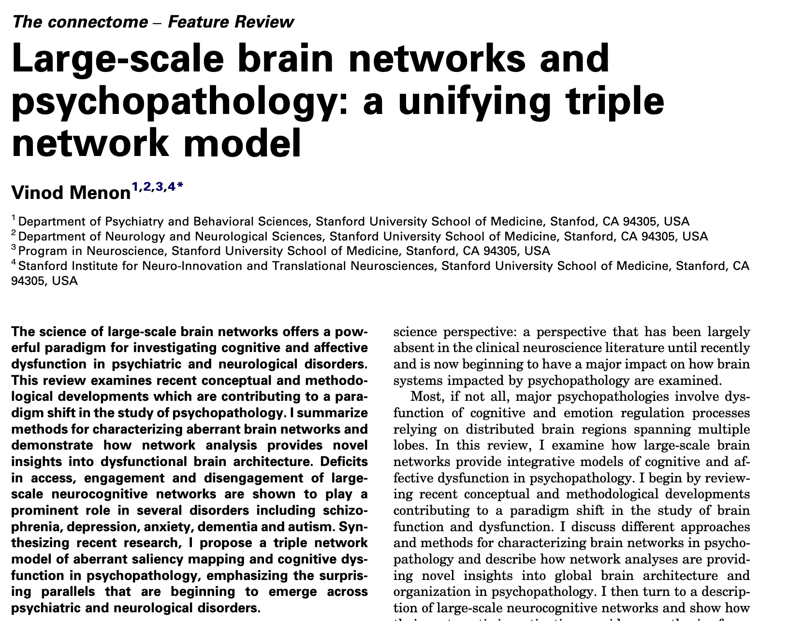
Menon V. Large-scale brain networks and psychopathology: a unifying triple network model. Trends Cogn Sci. 2011 Oct;15(1
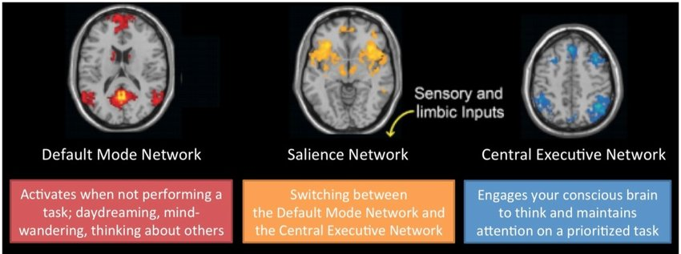
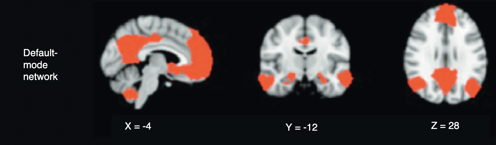
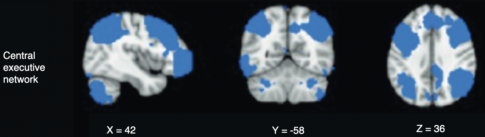
Réseaux exécutifs –contrôle externe, prise de décision
- Est le réseau de la volition/régulation émotionnelle externe
- comprend le cortex préfrontal ventrolateral, la partie dorsale du cingulaire antérieur, striatum dorsal.
- Le cortex DLPFC, par ses connections avec le ventrolateral, est le point d’origine de l’arc du contrôle cognitif.
- Le cortex préfrontal ventrolateral module des états émotionnels induits de façon externe et supprime les affects maladaptés
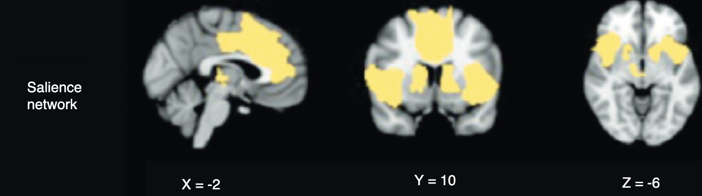
Triple Network Model
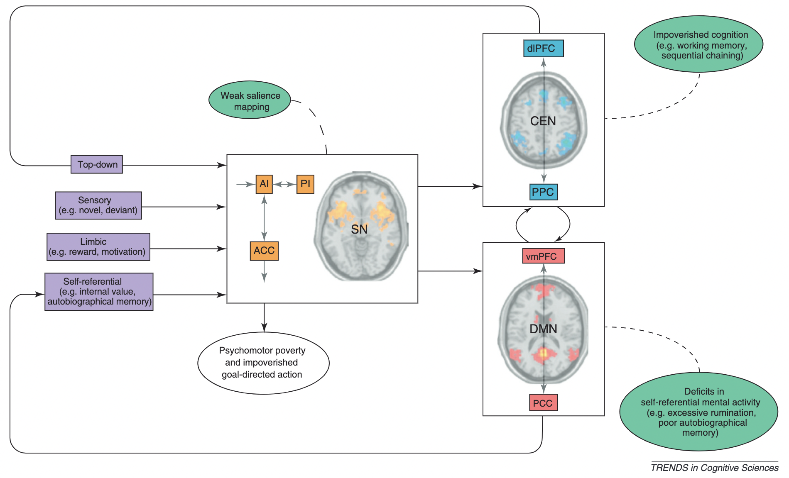
Menon V. Large-scale brain networks and psychopathology: a unifying triple network model. Trends Cogn Sci. 2011 Oct;15(1
Pathologies psychiatriques:
Modèle à 3 réseaux
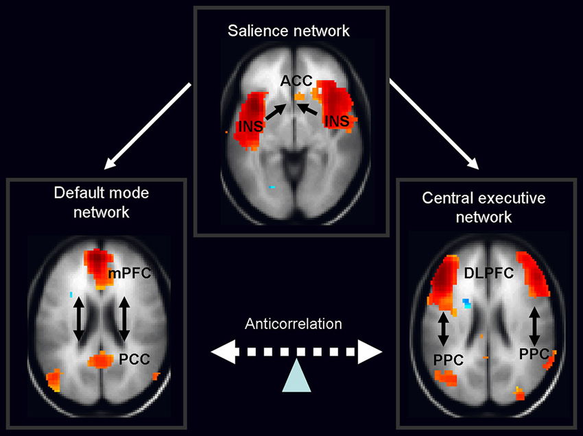
TMS : comment ça fonctionne
TMS
Appareil composé d’un stimulateur/générateur, connecté à une bobine émettant un champ électrique
Utilisé pour induire de façon électromagnétique un courant électrique sur une région spécifique du cerveau
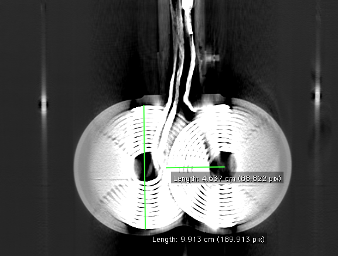
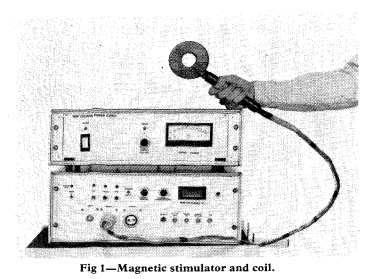
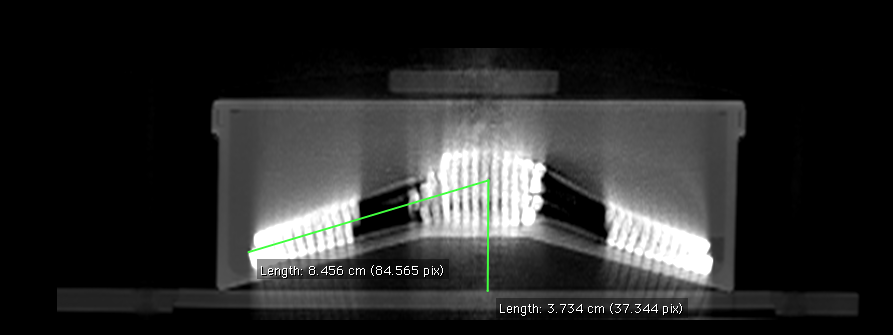
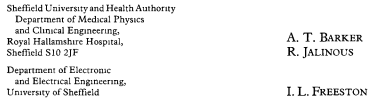
Principes Biophysiques
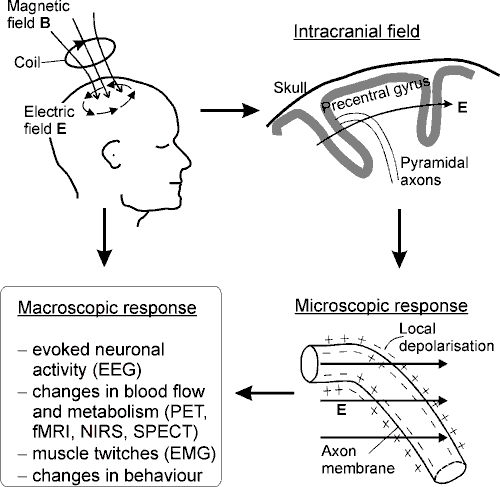
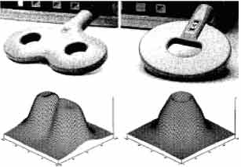
Mécanismes d’actions
Stimulation au-dessus du seuil moteur de repos (RMT) des neurones permet de les dépolariser et de décharger un potentiel d’action
Si stimulation effectuée de façon répétitive, peut avoir des effets persistants en augmentant ou diminuant l’excitabilité neuronale, à travers des mécanismes de LTP et LTD
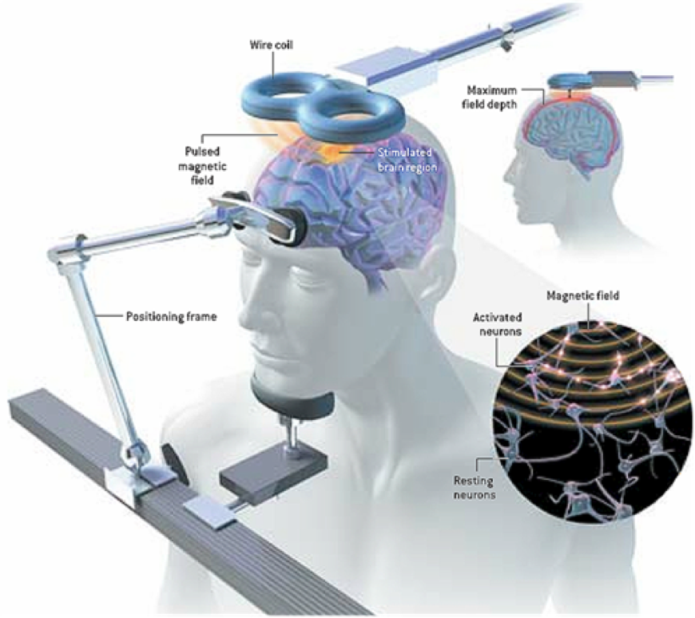
Structures neuronales activées par la SMT
- Plusieurs facteurs influencent la réponse des corps cellulaires et des axones des neurones du cortex cérébral à la SMT:
- Taille
- Localisation/Proximité de la bobine
- Fonction
- Orientation
- La SMT donne lieu à un flux de courant qui est parallèle (horizontalement) à la surface du cortex
- Les neurones stimulés directement sont ceux qui sont parallèles à la surface du cortex
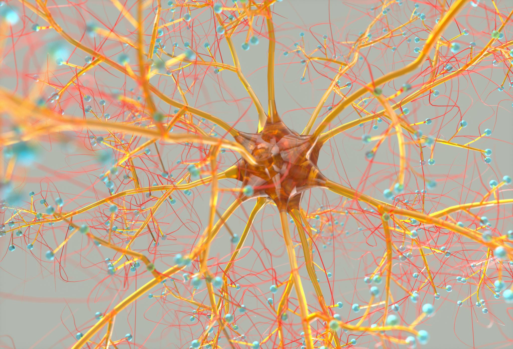
Modulation de l’excitabilité
- Facteurs:
- Médication (ex. lorazepam)
- Manque de sommeil
- Drogues et alcool
- Activation du muscle
- Âge (effet paradoxale)
- Hyperventilation
- Latéralité
- Attention
- Imagerie mentale
Types de bobines disponibles
- Design le plus simple est la bobine circulaire avec la concentration du champ magnétique sous le centre du cercle
- La bobine Figure-of-8 permet une stimulation plus focale (à la jonction des deux bobines)
- Double-cone permet de stimuler des structures plus profondes
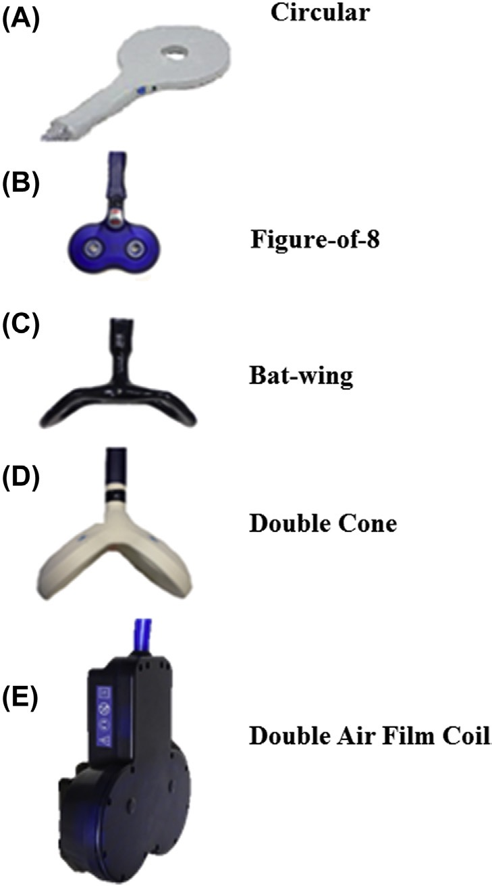
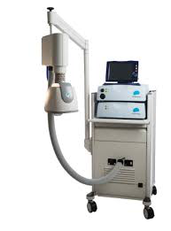
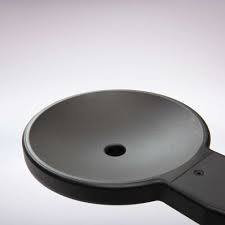
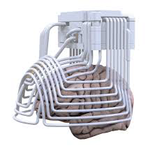
Utilisation de la TMS
Seuil moteur
- Quantité minimale de puissance de l’appareil de SMT nécessaire pour donner lieu à une réponse motrice dans 50% des essais
- Indicateur d’excitabilité des axones corticaux
- Permet de déterminer une dose de traitement sécuritaire
- Ajustement de la puissance de l’appareil aux variations physiologiques du patient
- Valeur spécifique à chaque patient
- Valeur spécifique à chaque hémisphère
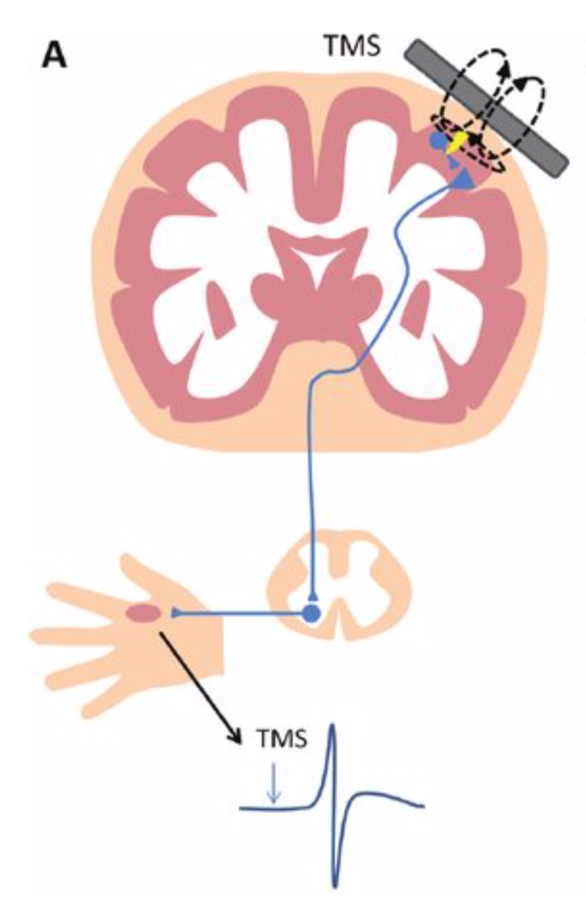
DOI: 10.1093/schbul/sbt078
Cortex moteur primaire et seuil moteur
Pourquoi l’aire motrice primaire? Effet facile à observer (contraction du pouce)
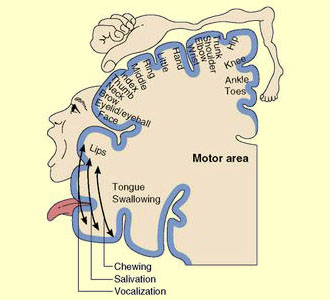
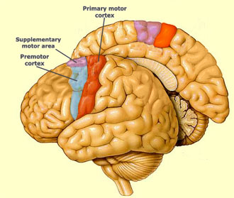
http://thebrain.mcgill.ca/flash/i/i_06/i_06_cr/i_06_cr_mou/i_06_cr_mou.html · http://thebrain.mcgill.ca/flash/i/i_06/i_06_cr/i_06_cr_mou/i_06_cr_mou.html
Évidences cliniques
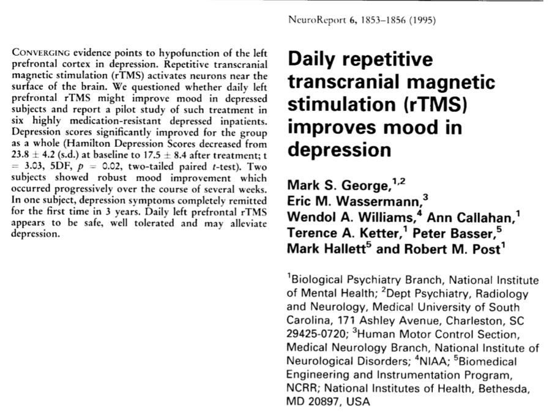
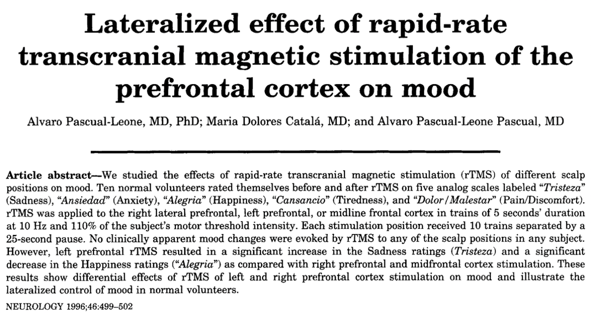
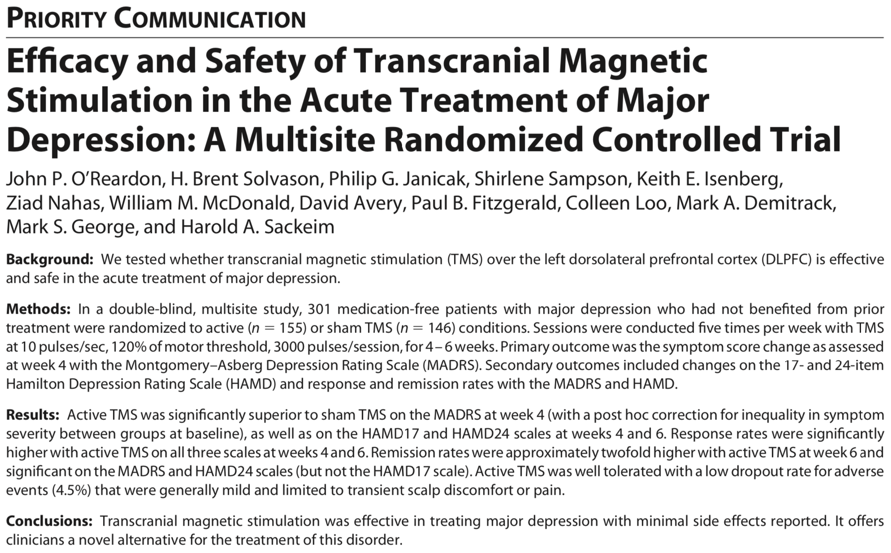
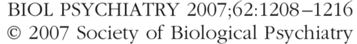
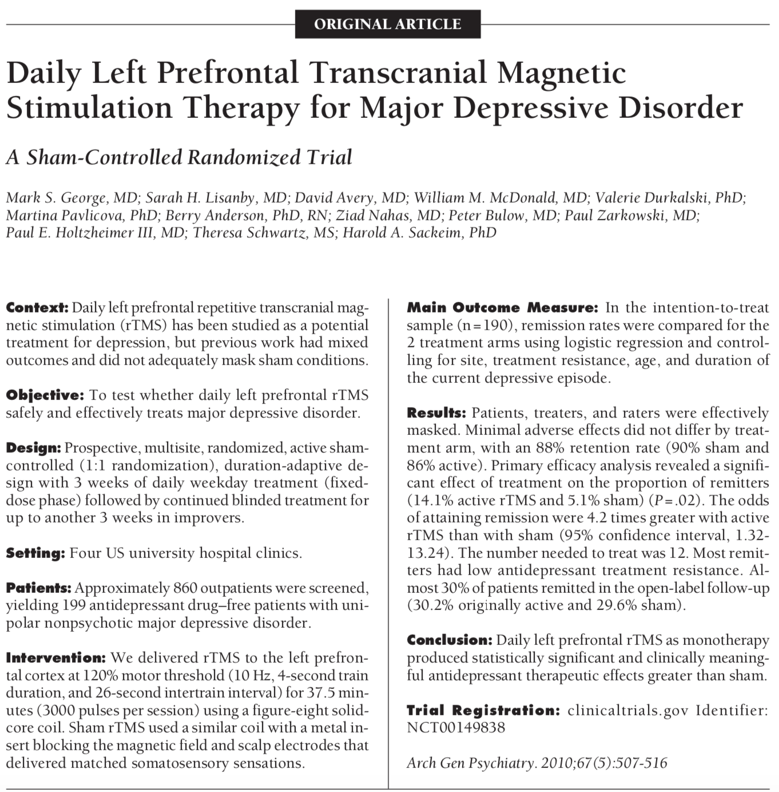
NICE 2015
NICE 2015
Efficacité de la rTMS
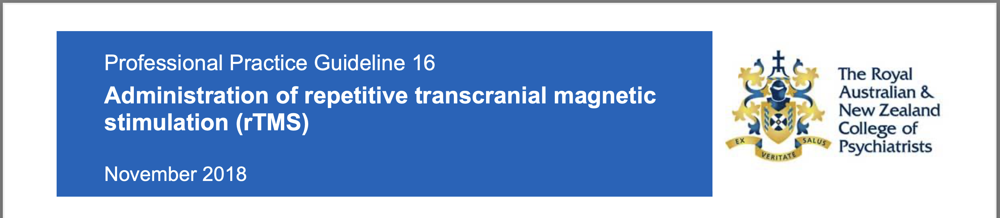
- Un traitement approprié pour les patients non résistants au traitement et résistants au traitement avec dépression
- Pour les patients souffrant de dépression très sévère, associée à des troubles psychotiques, ECT à prioriser, mais rTMS non exclue
- Bien que les études sur la rTMS spécifiquement menées auprès des populations âgées soient rares, les données actuelles suggèrent que l'efficacité antidépressive de la rTMS n'est pas nécessairement réduite chez les patients âgés, et il n’y a pas de problèmes de sécurité supplémentaires
CANMAT 2023
- Indication officielle
- dépression majeure réfractaire
- 1+ échec ATD selon CANMAT
- Études faites chez patients avec échec 2+ ATD
- Réponse: 40 à 50%
- Rémission: 25 à 35%
- Depression résistante au traitement (>2 AD)
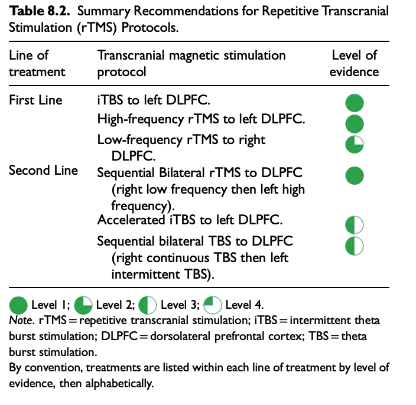
rTMS: taux de réponse et rémission
- 95 % de réponse et 63 % de taux de rémission chez les patients naïfs de traitement ; (65% et 35% ISRS, SNRI)
- 36,6 % de rémission après un à deux échecs de traitement médicamenteux
- 28,9 % de rémission après 3 à 4 échecs de traitement médicamenteux
- Maintien de la réponse\rémission 1 an : 50-60%, comme les médicaments.
- Les types de patients dans chacune de ces études semblent comparables lors de l'évaluation des caractéristiques de base.
Rtms en dépression « drug naive »(1er épisode), peu résistant, plus résistant… Voigt J, Carpenter L, Leuchter A. A syste
rTMS en dépression
Principales cibles SMT en dépression
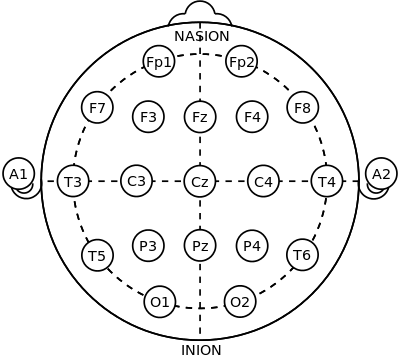
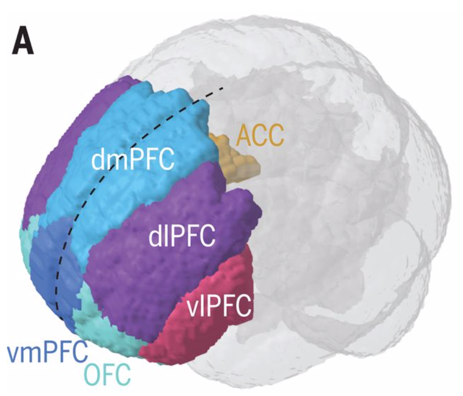
- Cibles FDA:
- Cortex dorsolatéral préfrontal (F3)
- Autres cibles (non-FDA approved):
- Beam F3/F4
- (tient compte de la circonférence)
- DMPFC (Fz)
- (manche de la bobine orienté à droite ou à gauche)
- OFC (AF8)
- Protocoles pour la dépression (FDA)
- 10 Hz DLPFC gauche (F3)
- iTBS DLPFC gauche (F3)
- Deep TMS HF (H1 et H7)
- Autre protocole
- 1 Hz DLPFC droit (F4)
Principales cibles SMT en dépression
Cibles SMT en dépression
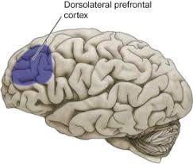
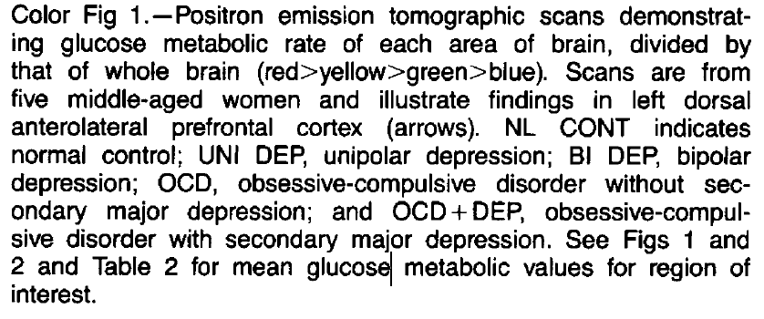
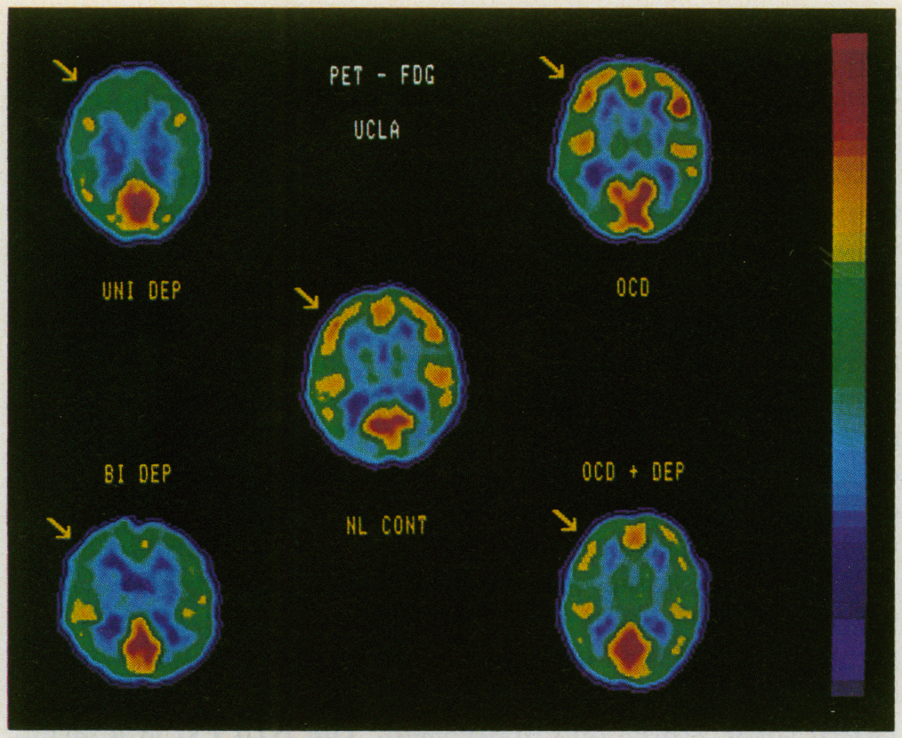
- Asymétrie préfrontale (TEP, IRMf, EEG)(Baxter et al., 1989, Grimm et al. 2008, Kennedy et al., 2001; Martinot et al., 1990, Coan and Allen, 2004; Thibodeau et al., 2006))
- Hypo-activité gauche
- Hyper-activité droite
- Bénéfices chez les patients (Bermpohl et al., 2006, Burt et al., 2002, Fitzgerald et al., 2003)
- Haute fréquence à gauche
- Basse fréquence à droite
- Hypothèse de débalancement dans le trouble dépressif majeur
Pourquoi stimuler le DLPFC G
- Le DLPFC est un nœud majeur du réseau exécutif/contrôle (CEN) et initie l’« arc du contrôle cognitif » via ses liens frontaux, utile pour la régulation émotionnelle.
- Dans le modèle à 3 reseaux
- Sur-engagement du DMN couplé au réseau de saillance (SN)
- Ruminations et allocation sous-optimale de ressources attentionnelles
- sgACC (DMN) anticorrelation DLPFC (CEN) (Liston et al. 2014)
- Stimulation: Renforcer le CEN et aider le SN à « commuter » hors du DMN est donc un levier thérapeutique.
Pourquoi stimuler le DLPFC G
- Rôle de l’insulta (réseau de saillance)
- Insula antérieure droite/dACC = “switch” qui bascule entre CEN et DMN
- Dans la dépression
- DMN dominant et trop couplé au SN → rumination et difficulté à sortir du mode auto-référentiel.
- sgACC fortement couplé au DMN; anticorrelation sgACC-DMN est un marqueur phénotypique.
- rTMS (HF DLPFC G)
- Normalisation de l’hyperconnectivité du sgACC au sein du DMN.
- Restauration de l’anticorrélation DLPFC↔mPFC DMN (meilleure alternance CEN↔DMN).
- Découplage DLPFC↔parahippocampe DMN.
- Baisse de la connectivité intra-SN dans le préfrontal, proportionnelle à l’amélioration; activité locale SN et pDMN ↑ (rééquilibrage, pas extinction)
Liston et al. 2014, Godfrey et al. 2022, Menon 2008
Pourquoi stimuler le DLPFC G
Ségrégation SN plus élevée au baseline → meilleure réponse clinique (SN « switch » plus efficace).
Connectivité de base rAI↔PCC (SN↔DMN) ou rAI↔DLPFC associée à de meilleures réponses.
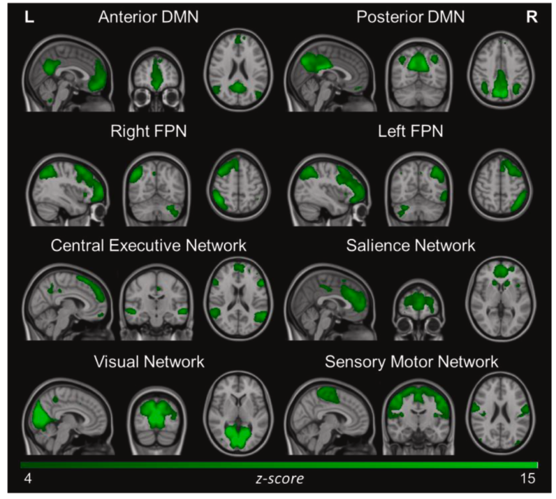
Liston et al. 2014, Godfrey et al. 2022
Protocoles rTMS
Rtms classique
rTMS « ORIGINALE »
10 Hz
37.5 min
Types de SMT
- Theta burst
- Réfère aux ondes EEG entre 4-7Hz chez l’humain
- Protocole Theta burst
- 3-pulsations de 50Hz données à un intervalle de 200ms ou 5Hz
- cTBS: continuous TBS induit de la « long-term depression-like reduction of cortical excitability »
- iTBS: intermittent TBS (2sec train of bursts (30 pulsations) répétées toutes les 10 sec) induit de la « long-term potentiation-like of cortical excitability »
15 pulse = 1 sec
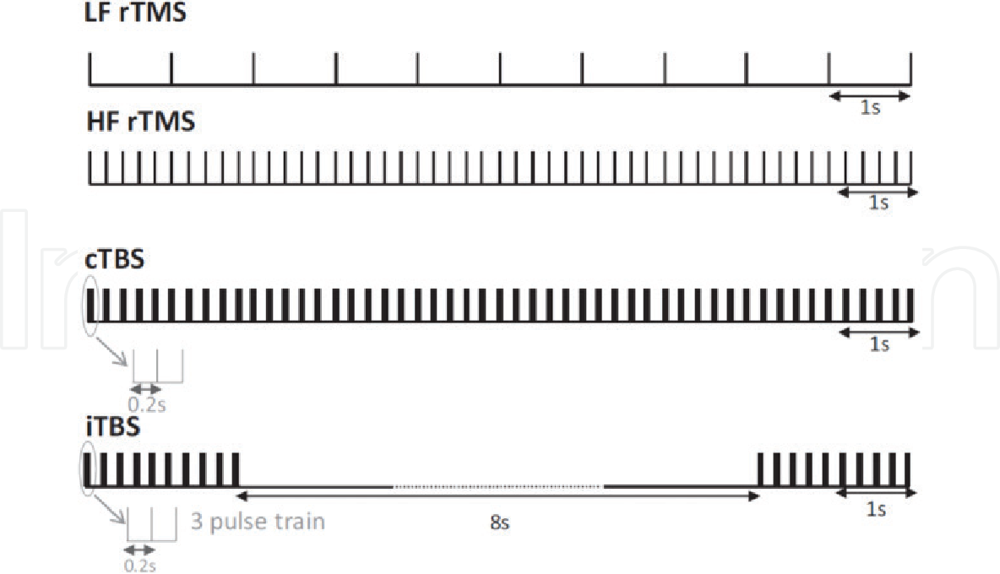
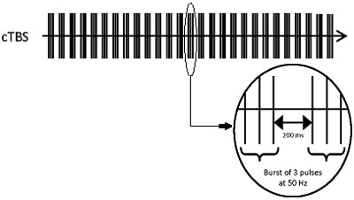
15 pulse = 1 sec (triplet x 5hz (5x per second)
rTMS « EXPRESS »
iTBS
3 min
iTBS
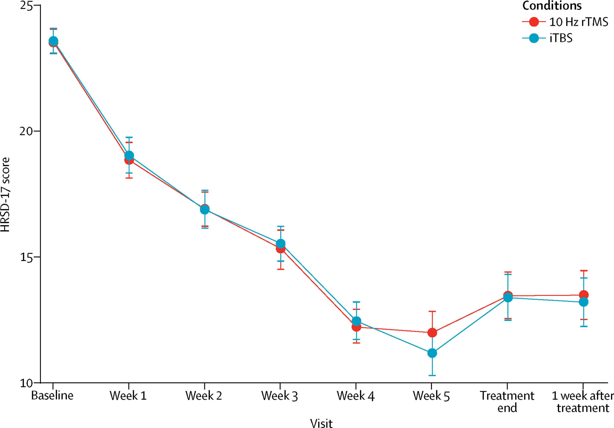
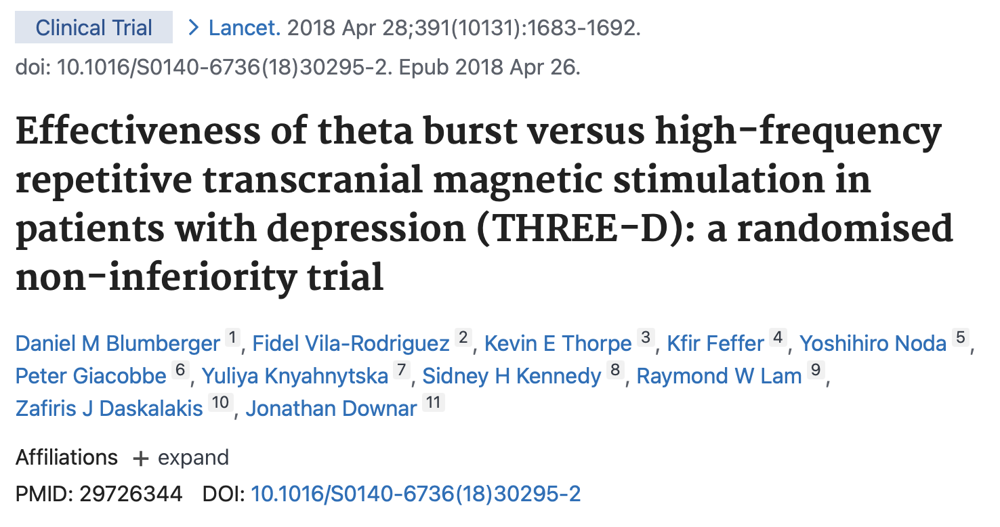
rTMS accélérée
rTMS “accélérée”
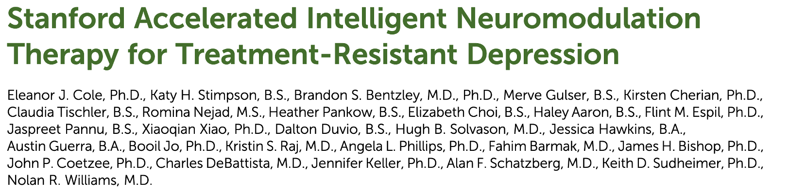
Stanford Neuromodulation Therapy
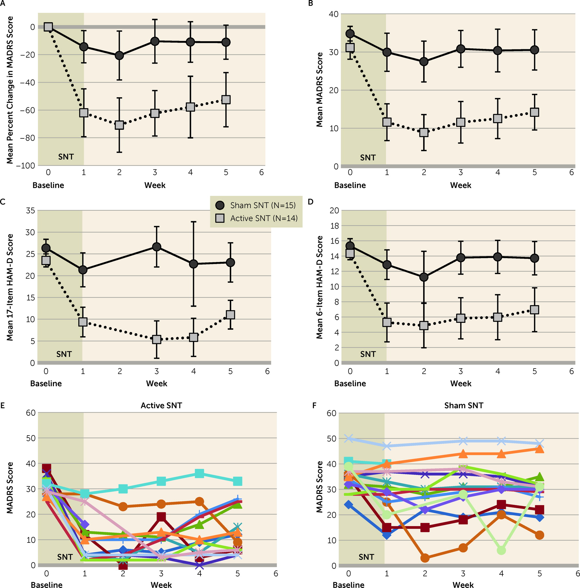
From: Stanford Neuromodulation Therapy (SNT): A Double-Blind Randomized Controlled Trial
American Journal of Psychiatry
aThe x-axis starts at baseline, just before the initiation of treatment, which is indicated between weeks 0 and 1 by shading. Error bars in panels A–D indicate 95% confidence intervals. Panels E and F show MADRS raw scores for individual participants in the active and sham treatment groups, respectively. Bonferroni-corrected post hoc testing indicated significant differences between groups at all posttreatment time points (p<0.005) for all assessments. HAM-D=Hamilton Depression Rating Scale; MADRS=Montgomery-Åsberg Depression Rating Scale.
FDA Breakthrough Clearance, sept 2022
Copyright © American Psychiatric Association. All rights reserved. · Date of download: 04/12/2024

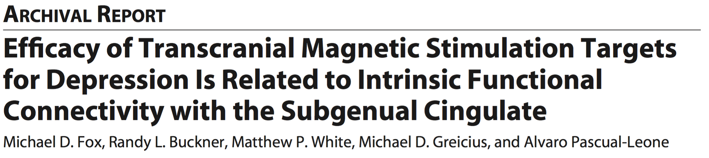
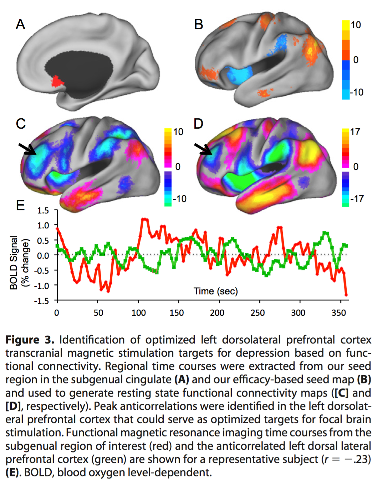
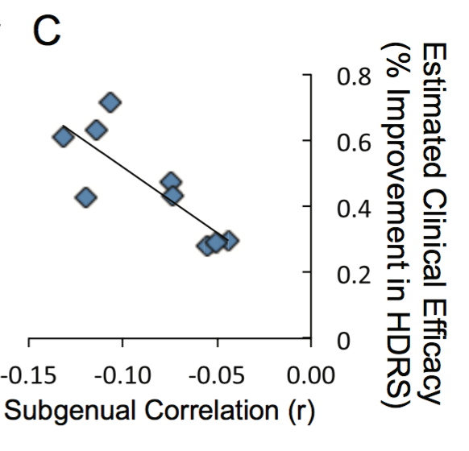
Deep TMS (H-Coil)
Source: Brainsway
Dépression majeure
Levkovitz, Y. et al. Psychiatry 14, 64–73 (2015).
Séances d’entretien?
- Question de l’entretien encore non-élucidée, mais plusieurs études démontrent une évolution plus favorable, si 6 mois à une fois par semaine, puis 2 semaines. Probablement moins nécessaire si moins de résistance à l’histoire, et rémission.
- Après 30 séances quotidiennes (6 semaines)
- Diminuer à 2x/sem pour 2-4 semaines,
- puis 1x/sem pour 4 semaines,
- puis q1-2 sem pour 3 mois
- Observation et rtms de sauvetage (« rescue », souvent 5-6 séances en 1-2 semaines, selon 20% de changement PHQ-9 par exemple), probablement acceptable.
Cibles rTMS pour le TOC
- Protocole Brainsway-Deep TMS (FDA)
- mPFC et cortex cingulaire antérieur (ACC)
- DLPFC droit (F3)
- Pré-SMA
- 15% de la distance nasion-inion (antérieur à Cz) sur la ligne sagittale
- (ex: 40cm n-a, 15% = 6cm)
- OFC
- Fp1 ou Fp2
Boucles CSTC (SMA, médial et proche du CCAd, et impliqué dans les programmes moteurs automatiques)
Cibles rTMS pour le TOC
- Dysfonction des circuits
- Orbitofronto-striato-pallido-thalamiques
- DLPFC
- OFC
- MPFC
- Gyrus cingulaire antérieur (ACC)
- SMA
- Ganglions de la base
DOI:https://doi.org/10.1016/j.tics.2011.11.003
Cible rTMS pour les hallucinations auditives
Jonction pariéto-temporale gauche
Entre P3-T3
Cibles rTMS pour les hallucinations auditives
- Jonction temporo-pariétale
- Convergence avec l’aire de Wernicke (perception de la parole)
- Association entre activation du cortex temporo-pariétal G (association auditive-linguistique) et des hallucinations auditives (Silbersweig et al., 1995)
- Hypothèse:
- Réduire l’activation excessive du cortex temporo-pariétal G avec de la basse fréquence 1Hz ou cTBS
- Augmenter l’activation du cortex DLPF inhibiteur (inhibition fronto-postérieure) par 10hz, 20 hz, iTBS?
Autres modalités
Stimulation à courant direct transcrânienne - tDCS
tDCS en dépression
Brunoni AR, Valiengo L, Baccaro A, Zanão TA, de Oliveira JF, Goulart A, Boggio PS, Lotufo PA, Benseñor IM, Fregni F. JA
Étude NOVA-tDCS- Miron JP, Lespérance P
(accepté, in press AM Psychiatry)
A: 87
S: 86
Tdcs et schizophrénie
Stimulation du nerf vague – VNS
Stimulation du nerf vague
Rush AJ, George MS, Sackeim HA, Marangell LB, Husain MM, Giller C, Nahas Z, Haines S, Simpson RK Jr, Goodman R. Biol Psy
SNV: effet anti-inflammatoire?
Axe cerveau-système digestif (Brain-Gut Cholinergic Pathway)
Lespérance P, Desbeaumes Jodoin V, Drouin D, Racicot F, Miron J-P, Longpré-Poirier C, Fournier-Gosselin M-P, Thebault P,
Étude RECOVER, premier résultats en juin 2024 - primary outcome pas atteint
- 500 patients, financé par le « Center for Medicare and Medicaid Services (CMS)
- Tous les participants se verront implanter des appareils VNS :
- la moitié recevra une stimulation active au cours de la première année et l'autre moitié recevra une stimulation retardée après la première année.
- Les participants seront suivis pendant 5 ans
Kétamine et psychédéliques
Ketamine
La Renaissance des psychédéliques
Aperçu historique de la kétamine
- Kolp, E. et al. Ketamine Psychedelic Psychotherapy : Focus on its Pharmacology, Phenomenology, and Clinical Applications. Int. J. Transpers. Stud. 33, 84–140 (2014).
- Green, S. M. & Johnson, N. E. Ketamine sedation for pediatric procedures : Part 2, Review and implications. Ann. Emerg. Med. 19, 1033–1046 (1990).
- Berman, R. M. et al. Antidepressant effects of ketamine in depressed patients. Biol. Psychiatry 47, 351-354 (2000).
Histoire de la kétamine Modèle médical
Article original détaillant le protocole de perfusion IV de 0,5mg/kg pendant 40 minutes.
«Les propriétés antidépressives de la kétamine, un agent anesthésique doté de propriétés antagonistes des récepteurs de l'acide N-méthyl-d-aspartique (NMDAR), ont été décrites pour la première fois il y a un peu plus d'une décennie (Berman et al. 2000) ».
Ketamine administration in depressive disorders: a systematic review and meta-analysis Psychopharmacology 2014, 231 3363
Mécanisme d'action : "Le cauchemar du psychopharmacologue”
Duman, R. S., Aghajanian, G. K., Sanacora, G. & Krystal, J. H. Synaptic plasticity and depression : new insights from stress and rapid-acting antidepressants. Nat. Med. 22, 238–249 (2016).
Mécanismes de la kétamine
La poussée glutaminergique: augmentation paradoxale du glutamate (via l’inhibition des interneurones GABAergique), stimulation AMPA
Dominant à petites doses
Blocage glutaminergique
Dominant à hautes doses
Duman, R. S., Aghajanian, G. K., Sanacora, G. & Krystal, J. H. Synaptic plasticity and depression : new insights from stress and rapid-acting antidepressants. Nat. Med. 22, 238–249 (2016).
L'approche prototypique
- 0,5mg/kg en perfusion IV sur 40 minutes, 2 à 3 fois par semaine
- Rémission rapide (0-24h) chez environ 30-40% des patients sévèrement résistants au traitement, avec des «responders» de plus en plus nombreux jusqu'à 4-5 perfusions (1)
- Preuve émergente d'une courbe dose-réponse (2)
- Régulations globales et régionales de réseaux cérébraux, qui s'opposent aux profils observés chez les patients déprimés (3)
- Réduction des idées suicidaires indépendamment de l'humeur (4)
- Renversement des déficits cognitifs associés à la dépression (5)
- Les effets bénéfiques durent généralement de 4 à 10 jours, mais peuvent être cumulatifs en cas d'administration répétée
1. McGirr A et al. Psychol Med. 2015;45(04):693-704. 2. Deyama S et al. Am J Psychiatry. 2019;176(5):388-400. 3. Lv Q
Évidences dans la depression résistante au traitement
- Chez ceux qui répondent au traitement (environ 60%), les effets :
- apparaissent immédiatement
- atteignent leur maximum à 24 heures
- S'estompent en 7 à 28 jours (surtout 7-10 jours)
- CANMAT :
- Niveau de preuve 1 (expérimental) dans la dépression unipolaire
- (15 RCT, ≈462 patients)
- Niveau de preuve 3 dans la dépression bipolaire
- (2 RCT, ≈ 33 patients).
- Revue Cochrane :
- La kétamine est le seul modulateur glutamergique dont l'efficacité en dépression est clairement démontrée.
Philips, JL et al. Am J Psychiatry. 2019 May 1;176(5):401-409. doi : 10.1176/appi.ajp.2018.18070834. · Caddy C. Cochrane Database of Systematic Reviews. 2015 DOI: 10.1002/14651858.CD011612.pub2. Swanson, J et al. Can J Psyc
CANMAT 2021
“La kétamine racémique intraveineuse administrée en une seule perfusion a des données probantes de niveau 1 pour ce qui est de l’efficacité chez les adultes de la DRT.
Les données probantes pour de multiples perfusions, administrées en série aiguë ou comme traitement d’entretien constant, se limitent au niveau 3.”
Swainson J, McGirr A, Blier P, Brietzke E, Richard-Devantoy S, Ravindran N, Blier J, Beaulieu S, Frey BN, Kennedy SH, Mc
Avec contrôle actif, patients « réels»
- « Odds ratio» de la réponse à une infusion dans la dépression résistante au traitement par rapport au placebo actif :
- 24h : 8.05
- 3-4d : 5.13
- 3-7d : 5.71
- Les effets bénéfiques s'estompent (jours à semaines) mais augmentent avec des traitements successifs.
- « Odds ratios» des antidépresseurs classiques chez les patients naïfs au traitement : 1,37 à 2,13 à 8-12 semaines
Kryst J et al. 2020. Pharm. Reports doi:10.1007/s43440-020-00097-z
Kétamine Risques et sécurité
- Psychose (?) – indépendante de l’état «dissociatif»
- Court terme, bien caractérisé :
- Hypertension ( 10-20 mmHg)
- Tachycardie ( 10-15 bpm)
- Jusqu’à 30% des participants ont des valeurs de Psyst >180 mmHg, Pdiast >100 mmHg et/ou Fréquence cardiaque > 110 Bpm
- L'OMS : contre-indiqué en cas d'hypertension sévère, d'ICC ou d'antécédents d'AVC.
- Maux de tête
- Nausées, vomissements
- Symptômes neuropsychiatriques : somnolence, anxiété, vertiges.
- À plus long terme, uniquement rapporté chez les toxicomanes chroniques jusqu'à présent :
- « ketamine bladder»: cystite, fréquence, urgence, dysurie, incontinence.
- Prévalence estimée : 20 % des toxicomanes chroniques.
- Hépatotoxicité
- Troubles de la mémoire à court et à long terme (reversible)
- Potentiel d'abus
Short, B., Fong, J., Galvez, V., Shelker, W. & Loo, C. K. Side-effects associated with ketamine use in depression: a systematic review. Lancet Psychiatry 5, 65–78 (2018).
Potentiel d’abus
- Expériences et effets aigues appréciés chez des sujets sans trouble lié à l’usage de substances - « increased liking for Ketamine »1,2
- Dose employée dans les études sur la depression réfractaire (0.4-0.8 mg/kg)
- Résultats également démontrés chez des utilisateurs récréationnels de polysubstances 3,4
- Effets sur le système opioïde
- Argument laissant présager la sensibilisation à d’autres substrats/drogues agissant sur le circuit de la récompense
- «gateway activity»
Morgan CJA, Mofeez A, Brandner B, et al.: Ketamine impairs response inhibition and is positively reinforcing in healthy
Potentiel d’abus
- Pour le moment, un seul cas rapporté dans la littérature de trouble liée à l’usage d’eskétamine iatrogénique 1
- Conditions multiples expliquant cette évolution
- Aucun cas rapporté dans l’étude à long terme sur l’eskétamine (pour le moment) (12 mois) 2
- Se rappeler qu’aucun cas n’avait été décrit dans les premières études sur les opioïdes et la douleur chronique !
1. Schak, K. M., Vande Voort, J. L., Johnson, E. K., Kung, S., Leung, J. G., Rasmussen, K. G., ... & Frye, M. A. (2016). Potential risks of poorly monitored ketamine use in depression treatment. American Journal of Psychiatry, 173(3), 215-218.
2.Wajs E, Aluisio L, Holder R, et al.: Esketamine nasal spray plus oral antidepressant in patients with treatment-resistant depression: assessment of long-term safety in a phase 3, open-label study (SUSTAIN-2). J Clin Psychiatry 2020; 81:19m12891
Les contre-indications
Modifications du «Default mode network»
Comme la rTMS, la kétamine entraîne de profondes modifications du DMN.
Dans une étude IRMf n=58, les anomalies du réseau chez les patients souffrant de dépression résistante au traitement se sont normalisées 2 jours après la perfusion de kétamine.
1. Millière, R et al. Frontiers in psychology. 2018, doi:10.3389/fpsyg.2018.01475 2. Evans JW et al. Biological Psychiat
Réseaux à grande échelle: ce que la kétamine fait en 24–72 h
- CEN/PFC: ↑ global brain connectivity préfrontale et normalisation de la dysconnectivité fronto-sous-corticale; effet plus marqué chez les répondeurs (Abdallah et al. 2016)
- ACC (sgACC/pgACC/dACC): modulation spécifique vs placebo en TRD; rôle nodal dans la sortie du mode auto-référentiel (Alexander et al.)
- Réduction reactivité amydalao-hippocampal au stimuli émotionnel (Sheidegger et al. 2016)
- Récompense/anti-anhédonie: ↑ réactivité du réseau mésolimbique et sensibilité à la récompense après ketamine
- Reed et al. 2018: ketamine associé avec diminution au réponse au fisages en colère vs heureux, amelioration MADRS associé a cette reduction dans amygdale/parahippocampe et cingulé/précuneus/médial frontal
- En 24–72 h, la kétamine re-module l’activité mPFC/ACC et dACC, nœuds DMN–SN, durant l’attention émotionnelle.
Effet plastique kétamine
- Kétamine réaligne des liaisons réseau clés: SN↔cervelet/striatum, FPN préfrontal, circuits de recompense
- Ces ajustements réseau-centriques soutiennent la plasticité synaptique mesurée indirectement, et s’expriment par une désaccentuation de la salience des signaux négatifs et une meilleure allocation attentionnelle/valence
- Restauration du contrôle CEN sur SN/DMN et réduction du biais négatif; mais….
Approche biomédicale Effet important, mais transitoire
Moyenne standard Taille de l'effet

Favorise la kétamine · Fond, G., Loundou, A., Rabu, C. et al. Psychopharmacologie (2014) 231 : 3663. doi:10.1007/s00213-014-3664-5 · Philips, JL et al. Am J Psychiatry. 2019 May 1;176(5):401-409. doi : 10.1176/appi.ajp.2018.18070834.
Donc, pourquoi pas la kétamine ?
- «…the most significant breakthrough for treating depression in half a century. »
- Trois inconvénients majeurs :
- Logistique
- Surveillance hémodynamique, administration invasive
- «Dissociation»
- Les traitements de la détresse associée à l’état dissociatif, comme les benzodiazépines, sont associés à une réponse réduite
- Courte durée des bénéfices (7-28 jours)
- Sécurité et efficacité peu claires à long terme en cas d'administration répétée
RS Duman, Cerebrum. 2018 Mar-Apr; 2018: cer-04-18
Pourquoi associer la kétamine à la psychothérapie ?
Histoire de la ketamine Psychothérapie assistée par la ketamine (KAP) I
- 1971 Mexique : Roquet a traité 150 patients «névrotiques» par «psychosynthèse», en utilisant 1,5mg/kg IM.
- Une combinaison d’interventions psychanalytiques standards et de traditions chamaniques.
- 85 % de «résultats positifs» rapportés
Histoire de la kétamine KAP II
Khorramzadeh, E. & Lotfy, A. O. The use of ketamine in psychiatry. Psychosomatics 14, 344-346 (1973).
- 1973 Iran : Khorramzadeh et Lofty ont utilisé la kétamine comme « abreactive agent » .
- Étude ouverte sur 100 patients présentants différents diagnostics.
- Doses de 0.2 – 0.3, 0.4 – 0.6, et 0.7 - 1,0 mg/kg + 0,5mg d'atropine
- Aucun bénéfice à faible dose, les deux doses les plus élevées ont « facilité » la psychothérapie avec des « expériences visionnaires » et des « effets abréactifs ».
- 6 mois après une seule séance : « 91 patients allaient bien »
- 0,4 - 0,6 mg/kg considérée comme la dose idéale.
Histoire de la kétamine KAP III
- 1974 Argentine : Fontana et Loschi ont utilisé la kétamine pour favoriser la régression
- Thérapie "Mort et renaissance".
- Peu de détails cliniques dans la publication (qui n'est pas disponible)
Qu'est-ce qu'un psychédélique ?
- Néologisme inventé en 1953 par le psychiatre canadien Humphrey Osmond à partir des mots grecs psyche (esprit/âme) et delos (révéler/manifester).
- Terme désignant un groupe d'agonistes 5-HT2A qui induisent des états de conscience extra-ordinaires avec : hallucinations, modification de sens, sentiments spirituels, d’unicité, etc.
- Les origines peuvent être retracées de diverses manières :
- 6 000 avant J.-C. Afrique du Nord
- Rituels aztèques
- 20ème siècle - Suisse
Willaya de Tamenrasset
Preller et al. 2018 eLife 2018;7:e35082 DOI : 10.7554/eLife.35082
Psychothérapie assistée par les psychédéliques
- Développée empiriquement bien avant que nous comprenions les mécanismes neuronaux
- Caractérisée par :
- Plusieurs séances de psychothérapie préparatoire
- 1 à 2 séances de traitement (« haute dose » ) ciblant des experiences maximales / aiguës (« peak experiences » )
- 3 à 12 séances d'intégration pour faire le point sur l'expérience, consolider l’autocritique et viser un changement durable
- Utilisation de concepts familiers (par exemple, l'analyse des rêves) et spirituels/mystiques moins conventionnels
Agent Psychédélique ou Anesthésique?
- Blocage extrasynaptique du NMDA
- La voie “stop”
- Suppression corticale
- Effets accrus par les benzodiazépines
- ↑ Glutamate
- La voie du "Go”
- ↑ Excitation neuronale
- Effets bloqués par les benzodiazépines et la lamotrigine.
↑ Débit sanguin cérébral et métabolisme
↑ Activité neuronale
↑ Norepinephrine
↑ Réveil, ↓ Douleur
↑↑ Norepinephrine
↓↓ Douleur, ↓ Fonctionnement cognitif
- ↓ Fonctionnement de la jonction temporo-pariétale
- ↑ Connexions Thalamus-Cortex
- ↓ Douleur, ↓ Intégration des signaux sensoriels, ↓ Fonctionnement moteur, ↑ Expériences hors du corps, ↑ Hallucinations.
↓↓ Connectivité de rétroaction
Anesthésie
↓ Connectivité de rétroaction
Préférences détendus
↓ Complexité neuronale
Les états inférieurs de la conscience
↑ Complexité neuronale
États supérieurs de conscience
↑ Neuroplasticité
Neurotoxicité
Dose
Dosage subanesthésique
≈ 0,1 - 1,0mg/kg
Dosage de l'anesthésique
> 1,0mg/kg
Psycholytique
Psychédélique
"Transpersonnel"
Mécanismes neurobiologiques
Vollenweider FX, Kometer M. The neurobiology of psychedelic drugs : implications for the treatment of mood disorders. Na
Dissociation: échelle CADSS, 23 items
Un modèle hybride biomédical et psychédélique de la kétamine
- Trois objectifs "synergiques" :
- Utiliser les bénéfices rapides biologiques, mais transitoires de la kétamine (humeur, cognition, suicidalité).
- Administrer la kétamine dans des contextes de traitement psychédélique qui créent des opportunités de développement psychothérapeutique.
- Améliorer l'engagement des patients dans la psychothérapie conventionnelle en utilisant les avantages et les expériences de la kétamine.
- 6 perfusions IV de 0,5mg/kg en 4 semaines
- Activation comportementale avant traitement
- Suivi continu obligatoire avec un psychothérapeute
- Pendant les traitements, emphase sur l’expérience :
- Un environnement agréable et non médicalisé
- Musique et/ou méditation guidée
- Cache-œil
Le modèle de Montréal
Garel et al. The Montreal model : an integrative biomedical-psychedelic approach to ketamine for severe treatment-resist
Page et al. 2024
Tout converge vers la plasticité
- AD, rTMS, kétamine: trois voies, un mécanisme commun → ouverture d’une fenêtre de plasticité
- Cellulaire/synaptique: BDNF/TrkB, LTP/LTD
- Réseaux: rééquilibrage CEN–SN–DMN, décorrélation sgACC–DMN, renforcement DLPFC
- Cognitif/comportemental: modèle de Harmer → réduction précoce du biais négatif, puis apprentissage
- Sans expériences correctrices, les gains s’érodent
- Psychothérapie, activation comportementale, liens sociaux, sommeil/exercice = « mettre en acte » la plasticité
- Choisir la bonne porte d’entrée, combiner intelligemment
- Message clinique: déclencher la plasticité… et l’orienter avec le patient vers des apprentissages durables
Addiction et neuromodulation
Addiction: modèle à triple réseau

Koob and Volkow, 2016 · Menon 2011
La Défaillance du "Switch" Insulaire : Capture du DMN
- Sridhanan et al. 2008*: Le Cortex Fronto-Insulaire Droit (rFIC) agit comme un hub causal. Il détecte la saillance et désengage le DMN pour activer le CEN (Contrôle Exécutif).
- Janes et al. 2010 et 2018 :
- Chez les fumeurs, l'exposition aux indices (Cues) provoque une activation de l'Insula qui échoue à désactiver le DMN.
- Des niveaux élevés de Glutamate dans le dACC (Cortex Cingulaire Antérieur dorsal) sont corrélés positivement avec cette incapacité à supprimer le DMN.
La Panne du SN/Insula
- Sullivan et al., 2013 – Hardware damage
- Selective perfusion deficit in the insula
- Liang et al. 2015 – Network disconnection
- Reduction in connectivity strength between the SN (Insula-dACC) and DMN
- Grodin et al. 2017 – Structural issue
- Cortical thinning and volume loss in Salience Network nodes
Le Rôle du Contexte : Stress et Sensibilisation
- Bach et al., 2023:
- Insula is structurally degraded but under stress it is (functionally) hyperactive
- Wijayendran et al. 2018: Cannabis and Aberrant Salience
Le "Hijack" Neurofonctionnel : Le Modèle iRISA et la Dysconnectivité des Réseaux dans l'Addiction
- Le Modèle iRISA (Impaired Response Inhibition and Salience Attribution) :
- L’addiction est définie par une attribution de saillance démesurée aux stimuli liés à la drogue au détriment des renforçateurs naturels, couplée à une faillite de l'inhibition de la réponse.
- Le "Hijack" de l'Attention (SN-CEN) :
- En présence de stimuli (cues), le Réseau de Saillance (Insula/dACC) "capture" les ressources du Réseau Exécutif (dLPFC) pour les réorienter vers la recherche de drogue, rendant le contrôle inhibiteur indisponible pour d'autres tâches.
- De la Volition à l'Automaticité (Habit Network) :
- L'engagement du Réseau des Habitudes (Putamen/Caudate) prédit l'initiation et la rechute, marquant la transition d'un comportement volontaire vers un automatisme compulsif.
- Réseaux "Self-Directed" et Mémoire :
- Le DMN (PCC/Precuneus) est surengagé durant le craving (auto-référence), tandis que le Réseau de la Mémoire (Hippocampe) est crucial pour la flexibilité cognitive nécessaire à la récupération.
Zilverstand et al. 2018
State Dependency
Silvanto 2008: L'impact d'une stimulation cérébrale est déterminé par l'état d'excitabilité initial de la population neuronale.
Circuit silencieux: Tendler et al. 2019
Silvanto et al. 2008
Meta Plasticity et rTMS
- Le concept de "Seuil Glissant" 𝛳:
- La plasticité synaptique n'est pas fixe. Elle suit la règle de Bienenstock-Cooper-Munro (BCM).
- Le seuil de modification synaptique 𝛳 se déplace en fonction de l'histoire récente de l'activité du neurone.
- La Loi de l'Homéostasie :
- Le cerveau cherche à maintenir sa stabilité (Homéostasie) pour éviter l'emballement (épilepsie) ou le silence total.
- Si l'activité passée était FAIBLE : Le seuil glisse vers la gauche –> Favorise la LTP (Excitation).
- Si l'activité passée était FORTE : Le seuil glisse vers la droite –> Favorise la LTD (Inhibition).
rTMS en toxico
Hypothèse sur localization ?
Target 1 – DLPFC (CEN) ➕
- La Cible : Le Cortex Préfrontal Dorsolatéral (DLPFC). C'est le nœud principal du CEN (Volkow and Goldstein 2011)
- L'Objectif : Restaurer la capacité d'inhibition. On ne supprime pas l'envie (Bottom-Up), on augmente la capacité à dire non (Top-Down).
- Terraneo et al. 2016
- 15Hz, DLPFC G, N = 32
- 100% retention en groupe rTMS (vs pharmacologique)
- Plus d’abstinence en rTMS, et moins de craving
Target 2 – vmPFC (DMN) ➖
- vmPFC = hyperactive during cue reactivity (DMN)
- vmPFC « surestime » la valeur de l’alcool (réseau chaud)
- Protocol inihibitrice
- McCalley et al. 2023
- cTBS + provocation par indice
- N = 50 (double blind RCT – sham) - 10 sem
- Protocol de provocation (in vivo et imagination)
- Retention 2,7x plus en groupe cTBS (vs sham)
- Abstience 3x à 3 mois (OR 3.09)
➕
Target 3 – H4 Coil (mPFC – Insula)
- « Direct » SN targetting
- Figure of 8 = 2-2.5cm (dLPFC)
- H4 (4cm)
- Bilateral PFC, and Insula
- Zangen et al. 2021 (Essaai pivot FDA)
- dTMS (H4) – 10 hz bilateral
- State Dependency : tenir cigarette ad craving 4/10 (3 minutes)
- Abtinence continue semaine 9-12: 28$ dTMS, 12% Sham
Li et al. 2013
- Low frequency repetitive transcranial magnetic stimulation of the left dorsolateral prefrontal cortex transiently increases cue-induced craving for methamphetamine.
- Population : N = 10 utilisateurs dépendants à la Méthamphétamine (MA) + 8 contrôles sains.
- Design : Crossover (les mêmes patients reçoivent le Vrai et le Sham à des moments différents).
- Protocole :
- Cible : DLPFC Gauche.
- Fréquence : 1 Hz (Inhibiteur).
- Nombre d'impulsions : 900 impulsions (15 minutes).
- Résultats :
- Le craving induit par les indices a AUGMENTÉ significativement après la rTMS réelle comparé au Sham.
- Le score de craving est passé de ~17 (Sham) à ~24 (Réel) sur leur échelle.
rTMS in addiction
- Craving : Hedges’ g = 0.41
- Consommation : Hedges’ g = 0.52
- Nicotine = plus grand taille d’effet (en particulier étude FDA)
- Le Constat : Les protocoles excitateurs (DLPFC Gauche) dominent, mais l'efficacité diminue selon la classe (Alcool/Opioïdes).

Soleimani et al. 2025 - Preprint
rTMS in addiction
Questions ?
References
- American Psychiatric Association. (2013). Diagnostic and Statistical Manual of Mental Disorders (DSM-5®). American Psychiatric Pub.
- Bovy, L., Möbius, M., Dresler, M., Fernández, G., Sanfey, A., Becker, E., & Tendolkar, I. (2019). Combining attentional bias modification with dorsolateral prefrontal rTMS does not attenuate maladaptive attentional processing. Scientific Reports, 9, 1168. https://doi.org/10.1038/s41598-018-37308-w
- Burton, R. (2004). The Anatomy of Melancholy. https://www.gutenberg.org/ebooks/10800
- Cipriani, A., Furukawa, T. A., Salanti, G., Chaimani, A., Atkinson, L. Z., Ogawa, Y., Leucht, S., Ruhe, H. G., Turner, E. H., Higgins, J. P. T., Egger, M., Takeshima, N., Hayasaka, Y., Imai, H., Shinohara, K., Tajika, A., Ioannidis, J. P. A., & Geddes, J. R. (2018). Comparative Efficacy and Acceptability of 21 Antidepressant Drugs for the Acute Treatment of Adults With Major Depressive Disorder: A Systematic Review and Network Meta-Analysis. Focus: Journal of Life Long Learning in Psychiatry, 16(4), 420–429. https://doi.org/10.1176/appi.focus.16407
- Coppen, A. (1967). The biochemistry of affective disorders. The British Journal of Psychiatry: The Journal of Mental Science, 113(504), 1237–1264. https://doi.org/10.1192/bjp.113.504.1237
- De Raedt, R., Leyman, L., Baeken, C., Van Schuerbeek, P., Luypaert, R., Vanderhasselt, M.-A., & Dannlowski, U. (2010). Neurocognitive effects of HF-rTMS over the dorsolateral prefrontal cortex on the attentional processing of emotional information in healthy women: An event-related fMRI study. Biological Psychology, 85(3), 487–495. https://doi.org/10.1016/j.biopsycho.2010.09.015
- DSM, I. (n.d.). Diagnostic and Statistical Manual of Mental Disorders, (1994). Washington DC: American Psychiatric Association.
- Fried, E. I. (2022). Studying Mental Health Problems as Systems, Not Syndromes. Current Directions in Psychological Science, 31(6), 500–508. https://doi.org/10.1177/09637214221114089
- Fried, E. I., & Nesse, R. M. (2015). Depression is not a consistent syndrome: An investigation of unique symptom patterns in the STAR*D study. Journal of Affective Disorders, 172, 96–102. https://doi.org/10.1016/j.jad.2014.10.010
- Gersner, R., Kravetz, E., Feil, J., Pell, G., & Zangen, A. (2011). Long-Term Effects of Repetitive Transcranial Magnetic Stimulation on Markers for Neuroplasticity: Differential Outcomes in Anesthetized and Awake Animals. Journal of Neuroscience, 31(20), 7521–7526. https://doi.org/10.1523/JNEUROSCI.6751-10.2011
- Holmes, S. E., Finnema, S. J., Naganawa, M., DellaGioia, N., Holden, D., Fowles, K., Davis, M., Ropchan, J., Emory, P., Ye, Y., Nabulsi, N., Matuskey, D., Angarita, G. A., Pietrzak, R. H., Duman, R. S., Sanacora, G., Krystal, J. H., Carson, R. E., & Esterlis, I. (2022). Imaging the effect of ketamine on synaptic density (SV2A) in the living brain. Molecular Psychiatry, 27(4), 2273–2281. https://doi.org/10.1038/s41380-022-01465-2
- Kendler, K. S., Muñoz, R. A., & Murphy, G. (2010). The development of the Feighner criteria: A historical perspective. The American Journal of Psychiatry, 167(2), 134–142. https://doi.org/10.1176/appi.ajp.2009.09081155
- Kennedy, S. H., Lam, R. W., McIntyre, R. S., Tourjman, S. V., Bhat, V., Blier, P., Hasnain, M., Jollant, F., Levitt, A. J., MacQueen, G. M., McInerney, S. J., McIntosh, D., Milev, R. V., Müller, D. J., Parikh, S. V., Pearson, N. L., Ravindran, A. V., & Uher, R. (2016). Canadian Network for Mood and Anxiety Treatments (CANMAT) 2016 Clinical Guidelines for the Management of Adults with Major Depressive Disorder. Canadian Journal of Psychiatry. Revue Canadienne de Psychiatrie, 61(9), 540–560. https://doi.org/10.1177/0706743716659417
- Kennedy, S. H., Lam, R. W., McIntyre, R. S., Tourjman, S. V., Bhat, V., Blier, P., Hasnain, M., Jollant, F., Levitt, A. J., MacQueen, G. M., McInerney, S. J., McIntosh, D., Milev, R. V., Müller, D. J., Parikh, S. V., Pearson, N. L., Ravindran, A. V., Uher, R., & the CANMAT Depression Work Group. (2016). Canadian Network for Mood and Anxiety Treatments (CANMAT) 2016 Clinical Guidelines for the Management of Adults with Major Depressive Disorder: Section 3. Pharmacological Treatments. The Canadian Journal of Psychiatry, 61(9), 540–560. https://doi.org/10.1177/0706743716659417
References
- Lam, R. W., Kennedy, S. H., Adams, C., Bahji, A., Beaulieu, S., Bhat, V., Blier, P., Blumberger, D. M., Brietzke, E., Chakrabarty, T., Do, A., Frey, B. N., Giacobbe, P., Gratzer, D., Grigoriadis, S., Habert, J., Ishrat Husain, M., Ismail, Z., McGirr, A., … Milev, R. V. (2024). Canadian Network for Mood and Anxiety Treatments (CANMAT) 2023 Update on Clinical Guidelines for Management of Major Depressive Disorder in Adults: Réseau canadien pour les traitements de l’humeur et de l’anxiété (CANMAT) 2023 : Mise à jour des lignes directrices cliniques pour la prise en charge du trouble dépressif majeur chez les adultes. Canadian Journal of Psychiatry. Revue Canadienne de Psychiatrie, 69(9), 641–687. https://doi.org/10.1177/07067437241245384
- Leyman, L., De Raedt, R., Vanderhasselt, M.-A., & Baeken, C. (2009). Influence of high-frequency repetitive transcranial magnetic stimulation over the dorsolateral prefrontal cortex on the inhibition of emotional information in healthy volunteers. Psychological Medicine, 39(6), 1019–1028. https://doi.org/10.1017/S0033291708004431
- Light, S. N., Bieliauskas, L. A., & Taylor, S. F. (2019). Measuring change in anhedonia using the “Happy Faces” task pre- to post-repetitive transcranial magnetic stimulation (rTMS) treatment to left dorsolateral prefrontal cortex in Major Depressive Disorder (MDD): Relation to empathic happiness. Translational Psychiatry, 9(1), 217. https://doi.org/10.1038/s41398-019-0549-8
- Lorenzo-Luaces, L., Buss, J. F., & Fried, E. I. (2021). Heterogeneity in major depression and its melancholic and atypical specifiers: A secondary analysis of STAR*D. BMC Psychiatry, 21(1), 454. https://doi.org/10.1186/s12888-021-03444-3
- Möbius, M., Lacomblé, L., Meyer, T., Schutter, D. J. L. G., Gielkens, T., Becker, E. S., Tendolkar, I., & van Eijndhoven, P. (2017). Repetitive transcranial magnetic stimulation modulates the impact of a negative mood induction. Social Cognitive and Affective Neuroscience, 12(4), 526–533. https://doi.org/10.1093/scan/nsw180
- Moncrieff, J., Cooper, R. E., Stockmann, T., Amendola, S., Hengartner, M. P., & Horowitz, M. A. (2023). The serotonin theory of depression: A systematic umbrella review of the evidence. Molecular Psychiatry, 28(8), 3243–3256. https://doi.org/10.1038/s41380-022-01661-0
- Ozcan, S., Gica, S., & Gulec, H. (2020). Suicidal behavior in treatment resistant major depressive disorder patients treated with transmagnetic stimulation(TMS) and its relationship with cognitive functions. Psychiatry Research, 286, 112873. https://doi.org/10.1016/j.psychres.2020.112873
- Pan, F., Mou, T., Shao, J., Chen, H., Tao, S., Wang, L., Jiang, C., Zhao, M., Wang, Z., Hu, S., Xu, Y., & Huang, M. (2023). Effects of neuronavigation-guided rTMS on serum BDNF, TrkB and VGF levels in depressive patients with suicidal ideation. Journal of Affective Disorders, 323, 617–623. https://doi.org/10.1016/j.jad.2022.11.059
- Pigott, H. E., Kim, T., Xu, C., Kirsch, I., & Amsterdam, J. (2023). What are the treatment remission, response and extent of improvement rates after up to four trials of antidepressant therapies in real-world depressed patients? A reanalysis of the STAR*D study’s patient-level data with fidelity to the original research protocol. BMJ Open, 13(7), e063095. https://doi.org/10.1136/bmjopen-2022-063095
- Qin, T., Guo, L., Wang, X., Zhou, G., Liu, L., Zhang, Z., & Ding, G. (2024). Repetitive transcranial magnetic stimulation ameliorates cognitive deficits in mice with radiation-induced brain injury by attenuating microglial pyroptosis and promoting neurogenesis via BDNF pathway. Cell Communication and Signaling : CCS, 22, 216. https://doi.org/10.1186/s12964-024-01591-0
- Ruhé, H. G., Mason, N. S., & Schene, A. H. (2007). Mood is indirectly related to serotonin, norepinephrine and dopamine levels in humans: A meta-analysis of monoamine depletion studies. Molecular Psychiatry, 12(4), 331–359. https://doi.org/10.1038/sj.mp.4001949
- SCHILDKRAUT, J. J. (1965). The catecholamine hypothesis of affective disorders: A review of supporting evidence. American Journal of Psychiatry, 122(5), 509–522. https://doi.org/10.1176/ajp.122.5.509
- Vanderhasselt, M.-A., Baeken, C., Hendricks, M., & De Raedt, R. (2011). The effects of high frequency rTMS on negative attentional bias are influenced by baseline state anxiety. Neuropsychologia, 49(7), 1824–1830. https://doi.org/10.1016/j.neuropsychologia.2011.03.006
- Wang, H.-Y., Crupi, D., Liu, J., Stucky, A., Cruciata, G., Di Rocco, A., Friedman, E., Quartarone, A., & Ghilardi, M. F. (2011). Repetitive Transcranial Magnetic Stimulation Enhances BDNF–TrkB Signaling in Both Brain and Lymphocyte. The Journal of Neuroscience, 31(30), 11044–11054. https://doi.org/10.1523/JNEUROSCI.2125-11.2011
- Wang, L., Zhou, C., Zhu, D., Wang, X., Fang, L., Zhong, J., Mao, Q., Sun, L., Gong, X., Xia, J., Lian, B., & Xie, P. (2016). Serotonin-1A receptor alterations in depression: A meta-analysis of molecular imaging studies. BMC Psychiatry, 16(1), 319. https://doi.org/10.1186/s12888-016-1025-0
- Zhao, X., Li, Y., Tian, Q., Zhu, B., & Zhao, Z. (2019). Repetitive transcranial magnetic stimulation increases serum brain-derived neurotrophic factor and decreases interleukin-1β and tumor necrosis factor-α in elderly patients with refractory depression. The Journal of International Medical Research, 47(5), 1848–1855. https://doi.org/10.1177/0300060518817417